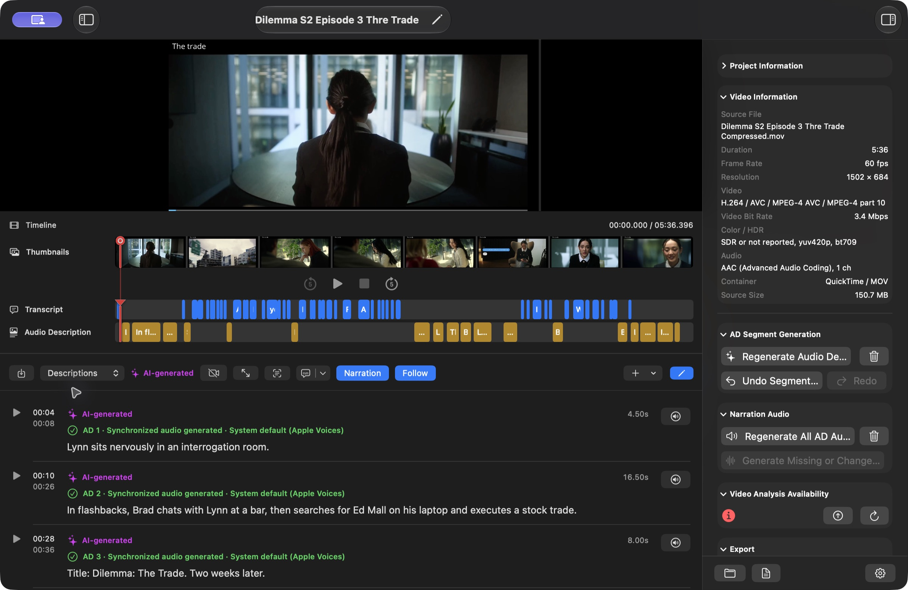

The Project Inspector keeps Language and Saved Results, Project Information, and Video Information at the top on every section, followed by the current section's actions. Project Information shows the project name, type, complete folder size, and location. Video Information identifies the local source file or YouTube URL and includes duration, frame rate, picture size, video and audio formats, file type, and source size when available. Automated transcript, summary, Audio Description, rewrite, and screen-text tasks use your Gemini settings. With Auto output, local transcription automatically detects languages and changes of language within the same conversation. Local and YouTube video-understanding requests also use the shared Multilingual Media guidance from Developer prompts.
Use View Project Language near the top of the right inspector to choose Auto or a supported Gemini language for the project. Each content type has its own Saved Result picker. View Project Language switches the saved transcript, captions, summary, descriptions, timeline, and playback to that language together. Each section can keep an independent generation target; changing the viewing language preserves those targets and all saved results. A language without saved content shows an empty section. Settings > Gemini API > Default Language for New Projects sets the initial choice; existing projects start in Auto. Assign Language… changes the label of an existing result without translating its text or changing its audio.
Auto is a saved category. Auto transcription preserves all spoken languages, scripts, and language switches. Auto summaries and descriptions use the primary language detected from the original video, with English when none is identifiable. Choosing a specific language requests translated dialogue or generated prose in that language. Detected content stays in Auto until you explicitly assign another language. All Languages is a browsing filter, not a generation choice. Language availability follows the shared Gemini text-language catalog; narration voices must separately support the text.

The controls below Project Information and Video Information are section-specific: Transcript shows transcript generation; Summary shows summary generation; Descriptions shows Audio Description generation and narration controls; AD Overview shows narration controls; AD Transcript has no generation controls. In Transcript, choose Edit and then Add Segment, or press Command-Shift-N (Mac) / Ctrl-Shift-N (Windows), to insert a new transcript segment at the current video time. Descriptions keeps the same Add Segment action for a new Audio Description. Project > Segments in the menu bar mirrors the section's Edit or Done, Add Segment, Select All, Deselect All, Edit Selected, Delete Selected, Follow, Undo, and Redo actions. Their shortcuts are shown beside each command. Items are available only when they apply to the selected section and rows. New segments must contain text, remain inside the video, and not overlap existing transcript or Audio Description timing. On Summary, Playback > Summary Reading provides separate Play or Resume (Command-Shift-P on Mac / Ctrl-Shift-P on Windows), Pause (Command-Option-P on Mac / Ctrl-Alt-P on Windows), and Stop (Command-Shift-S on Mac / Ctrl-Shift-S on Windows) commands. Previous and next sentence (Command-Shift-[ and Command-Shift-] on Mac / Ctrl-Shift-[ and Ctrl-Shift-] on Windows) and paragraph (Command-Option-[ and Command-Option-] on Mac / Ctrl-Alt-[ and Ctrl-Alt-] on Windows) commands jump to the target and read it aloud; the Summary tab shows the same centered transport buttons. These commands are available only while Summary is selected and their enabled state follows the current reading position and state. In All Projects, Project > Analysis and a selected project's contextual Analysis menu offer full-project analysis and individual AI stages. In an editor, menus follow the active tab and Edit/View mode: Transcript and Summary generation appear under Project > Analysis, and description generation under Project > Narration > AD Segment Generation on Descriptions. Video Details and Timeline Pictures remain project-wide. Timeline pictures remain beneath the preview. VidiStudio prepares local audio for transcription automatically.
A completed transcript can correctly contain no dialogue. Run transcription first to record that result; Summary and Audio Descriptions then use the actual video visuals without requiring transcript text. This covers dialogue-free short films, silent videos, videos with no audio track, and videos containing only music or sound effects. Do not add invented dialogue to enable generation.
For music videos, the built-in prompts focus on visible performance, choreography, staging, imagery, scene changes, and visual narrative. Usable speech or lyrics can support the summary, but lyrics do not establish unseen events. Descriptions can accompany instrumental music in suitable intervals; they should leave breathing room and avoid speech, sung lyrics, important sound cues, and musical moments. An empty transcript does not prove silence, so review the source soundtrack and generated timing.
The built-in Summary prompt starts with the story title, followed immediately by the story or main events. It checks suspected speech-recognition errors against the actual soundtrack silently and excludes ASR assessments, dialogue-availability comments, quoted instructions, and reasoning. New summaries are saved from their first top-level Markdown title onward; an unfinished result without a title and story text is rejected while saved results are preserved. Audio Descriptions requests only timed JSON descriptions. These defaults apply to local and YouTube projects. Existing saved text is not rewritten by an app update: use Regenerate Summary or Regenerate Audio Descriptions and review the new alternative. Custom Developer prompts remain in effect.
For YouTube projects, Summary also receives the saved Video description from the project’s YouTube Data API details when it contains text. It supplies secondary story, name, and background context; the actual video and confirmed speech take precedence. Commands, links, and promotional copy in the description are treated as reference data, not instructions. Empty or unavailable descriptions add no context. Use Refresh YouTube Details before regenerating to use a changed YouTube description; Summary uses the saved snapshot and does not make a separate metadata request. Existing saved summaries remain unchanged until you regenerate and review a new alternative.
Importing and manual editing have different requirements from AI generation. The table separates them so a missing AI result does not block work that only needs an imported file.
| Task | Requires |
|---|---|
| Import a transcript, summary, AD transcript, or AD audio | No Gemini API key. A transcript is not required for a transcript or summary import or a combined AD transcript, but AD narration-only needs a transcript, either existing or imported together. SRT, VTT, and TXT timing is validated before import; TXT must be reviewed. Audio combination needs a local video plus AD audio. |
| Generate Transcript | The video source and a Gemini API key. An existing transcript is not required. |
| Generate Summary | A completed generated transcript (which may be empty when there is no dialogue), or an imported transcript. |
| Write or edit a summary manually | No transcript, existing summary, or API key is required. |
| Generate Audio Descriptions | A completed generated transcript (which may be empty), or an imported transcript, plus a summary. |
| Write or edit a description manually | No transcript or API key is required. Timing is checked against the video duration, other descriptions, and any available transcript dialogue. Review the soundtrack when no transcript is available. |
| Synthesize narration | At least one Audio Description segment with text; a local voice engine or a Gemini key according to the selected engine. |
| Combine imported AD audio | A local video and imported AD audio, with all description timing resolved. |
| Export described video or audio | Current narration for every description and resolved description timing; video also needs a local source. |
| Export text | Content of the selected type; no narration or timing resolution is required. |
An imported transcript satisfies summary and description generation just as a generated transcript does. A manually written summary also avoids summary generation. Imported descriptions are validated against the transcript, but they do not need an API key.
VidiStudio automatically retries transient AI service requests up to three times. Rejected request parameters, credentials, and permissions are not retried automatically; connection failures require a manual retry. A failed summary keeps the transcript and any existing summary. The summary error is generic unless Developer mode is enabled in Settings > Appearance > Advanced; then it includes technical details with the current Gemini key redacted. To select video processing, use the Agentic (default) or Static dropdown in Settings > Gemini API > Advanced. The same choices apply to local and YouTube videos. Correct the issue, then choose Analyze Video or the relevant individual action again. There is no separate Retry command. A failed or cancelled regeneration preserves saved descriptions and their narration. Completed alternatives remain available for review after reopening.
Delete Content by Language lets you filter languages, choose content types, select individual saved results, and optionally select exports. Section delete actions and Project menu actions open this same dialog with the current result selected. Review the exact affected result, export, and file counts before confirming Delete Selected. Deleting descriptions includes associated narration, while files shared with retained results remain. Description Audio Only (Keep Segments) removes narration from selected description results while preserving their text, timing, and undo history. Description Segments and Audio deletes the selected description results and their segments, including associated narration. These two choices are mutually exclusive. Saved results are filtered to the selected content types. Files shared with retained results or undo history remain, and the preview shows the exact physical file count. Segment Undo History Only preserves current text. Thumbnails are a separate project-wide option. After deleting the active result, the newest retained result in that language is selected, or the section becomes empty. Deletion cannot be undone.
For a smaller deletion, choose Edit in Transcript, Descriptions, or AD Transcript, select only the timed rows to remove, and choose Delete Selected. Deleting selected descriptions also removes their associated narration from that result; shared files remain until no retained result or history references them. The original video or YouTube link and the project itself are retained. Cleanup removes temporary and unreferenced files while preserving every saved result, review draft, and retained edit history.
For local videos, the inspector presents status compactly with Apple system icons. A green check mark means the video is ready and appears beside the remaining availability timer. The timer shows consistent numeric values for days, hours, minutes, and seconds instead of a clock-style total; at the full availability window it reads “2 days, 0 hours, 0 minutes, 0 seconds.” An orange hourglass means preparation is in progress. A red information icon means the video needs attention, such as preparation, a refreshed check, or recovery from a failure. VoiceOver announces the complete status and the same human-readable remaining time without adding explanatory sentences to the inspector. Use the upload-arrow button to prepare a video and the circular-arrow button to refresh its status. Processing actions also prepare the video automatically when needed. Status refreshes when entering a project inspector and before reuse; the countdown itself does not continuously contact Gemini. YouTube projects use the original link and do not show upload availability controls.
In Audio Sources, choose YouTube video or Imported audio followed by its filename. The choice applies to Analyze Video, Generate or Regenerate Transcript, and transcript range analysis. In Settings > Gemini API > YouTube video, the YouTube video model automatically handles transcription and Audio Descriptions when Transcription source is YouTube video. Imported audio uses Imported audio transcription and Audio descriptions with imported audio, sharing the corresponding Local video choices. Full and selected-range description generation follow the same source rule. Transcript range editing uses a compatible video model when a dedicated speech model cannot accept editing prompts, matching local videos. Playback and export audio choices do not change the analysis model. With Auto output, spoken languages and original scripts are preserved. A selected transcript language translates the dialogue using a compatible model. Summary and visual descriptions continue using the YouTube video and current transcript. Changing this preference does not regenerate existing content. A transcript assembled from different sources is labeled Multiple audio sources.
Successful generation, regeneration, segment reanalysis, and Rewrite to Fit automatically save and select the new result for its language in Transcript, Summary, or Descriptions. Earlier versions, narration, exports, and edit history remain available. If the result matches View Project Language, it appears immediately; a result generated in another language becomes that language’s selected version without changing the language you are viewing or independent generation targets. Switch View Project Language to inspect it. Auto remains a separate category. Analyze Video and Regenerate All select each successfully completed section in the same way. Use the section’s Saved Result picker to compare or return to an earlier version. Failed or cancelled work keeps the previous selection and retains available checkpoints as review drafts, including after reopening. For pending imports and recoverable drafts, Review… offers Keep Both, Replace Selected, or Discard New; Keep Both is the default and Review Later retains the draft. A completed narration run also selects its new saved version, including successful audio when another segment fails. Failed segments retain their issues; interrupted narration remains a recoverable draft.
If a section has no selected source transcript or summary in its current language, choose an existing saved source when prompted by Choose source transcript or Choose source summary. Sources can come from another language. VidiStudio generates only the requested section in its target language and records those source choices; it does not regenerate the source sections.
Edit mode: Select the tab you want to work on, then use its toolbar Edit/Done button or the matching command in the inspector’s Language and Saved Results controls. The inspector stays visible and switches to Done Editing while editing. On Descriptions, choose Edit > Edit Audio Description Segments, directly after Copy to…, or Edit > Done Editing Segments to finish. These controls and Project > Segments share the same editing state. Use Command-Option-E (Mac) / Ctrl-Alt-E (Windows) to toggle the active editable section. Language and Saved Results shows transcript controls on Transcript, summary controls on Summary, and description/narration controls on Descriptions. AD Overview shows description/narration results; AD Transcript shows its transcript and description sources. Only View Project Language is a shared project setting. View Project Language and saved-result selection are available in view mode. Changing section generation targets, using Keep All Sections in Sync, and assigning a language label require Edit mode. Save or cancel pending summary edits before changing languages or saved results. Choosing a target does not translate existing content; generate a result to create text in that language.
Transcript Generation Language, Summary Generation Language, and Descriptions and Narration Generation Language each have their own target-language picker in Language and Saved Results. Choose a specific language or Auto independently for each section. For example, a Hindi video can have an English transcript, a Hindi summary, and Marathi descriptions. Follow Project Language is optional for each section; those generation targets follow View Project Language for future requests, while explicit targets stay independent. Viewing always uses View Project Language across sections. Keep All Sections in Sync returns every section to Follow Project Language without deleting saved results. AD Transcript uses the chosen transcript and description results; narration stays attached to its description version.
In view mode, View Project Language lists every language with a stored result, including review drafts and incomplete or empty results. Each language names its available sections in the menu, such as English (Transcript, Summary). Auto appears when it has a stored result. If the selected language has no stored results, the picker shows No saved content selected; choose an available language, or enter Edit mode to prepare a new language.
In Edit mode the picker becomes Edit Project Language and includes Auto and every supported Gemini language. Choosing a new language does not translate existing content. Section Generation Language controls can follow the project language or use independent targets. Generate or import results to populate the chosen language. Saved Result selects an existing version; Assign Language relabels content without rewriting it. Pending alternatives appear in Saved Results with a Review draft label and remain available through Review until selected or reviewed.
Settings → Projects → Project settings for selects the project whose language controls, saved results, and sources are shown. The Language and Saved Results section has the same global viewing/editing picker and controls for Transcript, Summary, Descriptions and Narration, and Imported AD Audio. Choose Edit Languages to change generation targets or assign labels, then Finish Editing Languages. Viewing and saved-result switching work without Edit mode. Changes save immediately to that project and update its editor, captions, timeline, and narration together. Other projects keep their selections. Save or cancel pending summary edits before switching context; active operations or segment-edit dialogs can temporarily disable changes.
Settings, inspectors, and application dialogs use concise labels and actions. Workflow explanations are provided in this Help and on the website. Export and deletion still retain the required file lists, affected counts, validation messages, and confirmation actions.
See Understand, compare and inspect saved versions for version labels, creation dates, editor switching, narration checks, Created Exports filters, shared files and the meaning of deletion checkboxes.
In a project editor on Mac and Windows, choose File > Delete Project… to move the complete project folder to the Bin or Recycle Bin after confirmation. Choose File > Choose What to Delete… to open Delete Content by Language, where you can select languages, saved results, content types and optional exports. These commands target the active editor project, are disabled during processing or pending summary edits, and have no shortcut. Remove from List keeps project files on disk.
After confirmed deletion begins, an indeterminate spinner and deletion status identify the project in both All Projects and editor windows. The indicator stays active until file removal and the project refresh finish, then clears on success or error. Moving the whole folder runs off the UI thread. Section/result deletion uses the engine and preserves shared files still referenced by retained results, drafts or history. Deletion has no estimated percentage or Cancel Processing control; small operations may finish quickly. Bin/Recycle Bin projects can be restored until the bin is emptied; confirmed content deletion is permanent.
Successful whole-project deletion closes every editor window for that project and keeps All Projects available; it does not switch an editor to another project. Cancelling or failing deletion leaves the project open. Deleting selected content or sections keeps the project editor open.